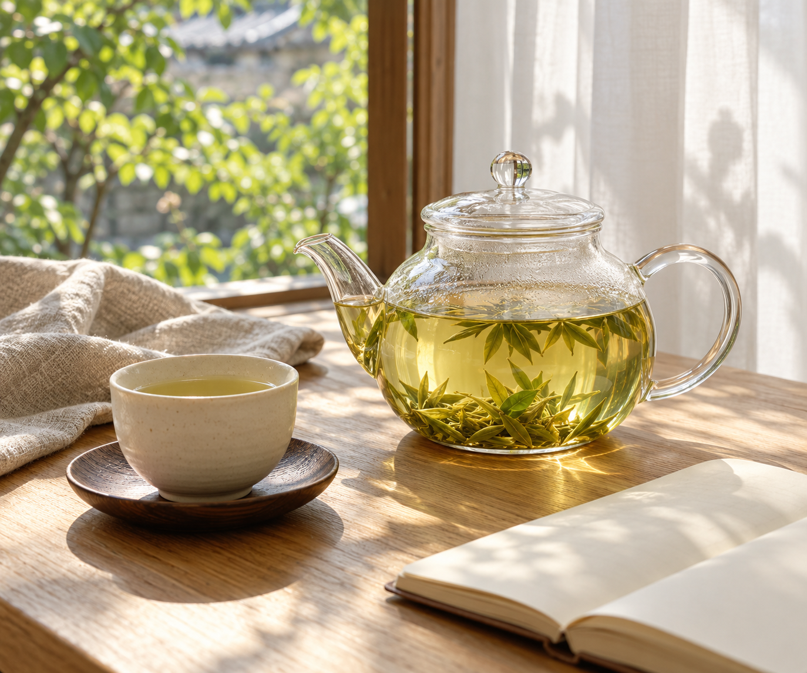
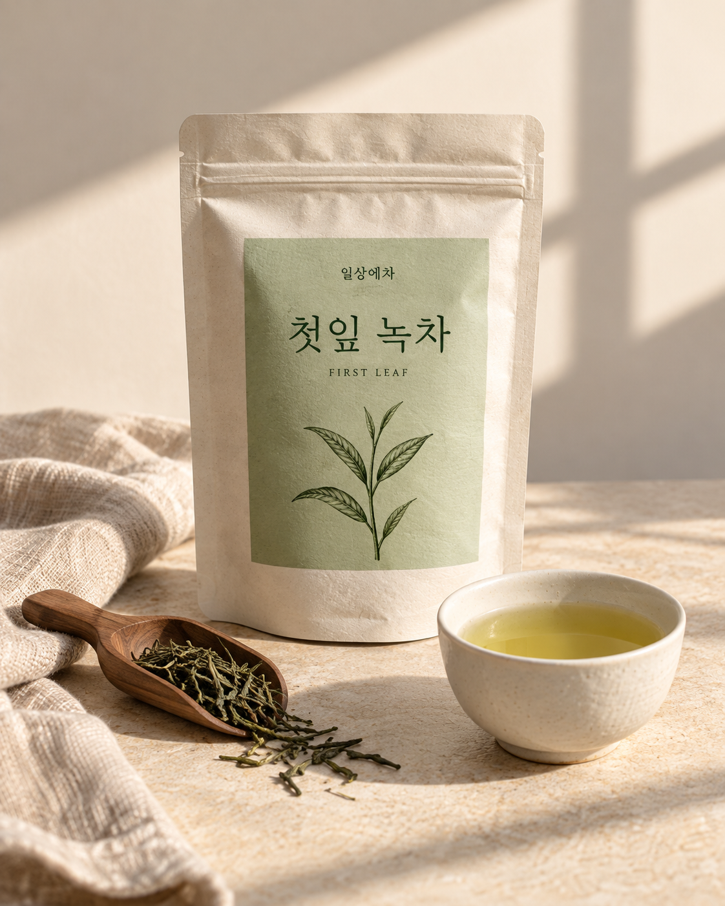
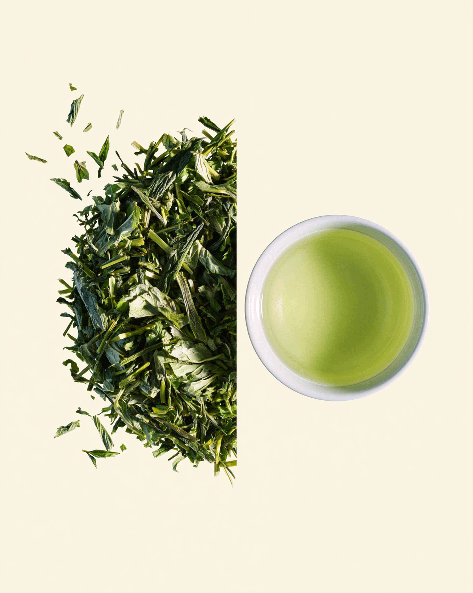

A LITTLE PAUSE, EVERY DAY
별일 없는 하루에도,
차 한 잔의 쉼.
해야 할 일을 잠깐 내려두고,
따뜻한 잔을 두 손으로 감싸 보세요.
맑은 찻향이 익숙한 하루에
작은 여백을 만들어 줍니다.


DAILY TEANO. 01 / PURE GREEN TEA
여린 찻잎의 맑은 향과 담백한 감칠맛,
은은하게 이어지는 단맛을 담았습니다.
한 잔을 고르는 순간부터, 나를 위한 작은 쉼.
A LITTLE PAUSE, EVERY DAY
해야 할 일을 잠깐 내려두고,
따뜻한 잔을 두 손으로 감싸 보세요.
맑은 찻향이 익숙한 하루에
작은 여백을 만들어 줍니다.


MEET YOUR FIRST LEAF
어린 녹차잎 본연의 맛을 천천히 만나 보세요.
복잡한 향을 더하지 않아도 충분한 한 잔.
잔을 가까이할 때 느껴지는 어린 찻잎의 향.
입안에 부드럽게 퍼지는 녹차 본연의 맛.
마신 뒤에도 가볍게 이어지는 다정한 여운.
BREW YOUR PAUSE
녹차는 낮은 온도로 짧고 은은하게 우려 주세요.
70°C
너무 뜨겁지 않은 물을 준비해요.
1–2분
찻잎을 넣고 가볍게 우려 주세요.
한 잔의 쉼
찻잎을 건져내고 천천히 즐겨요.